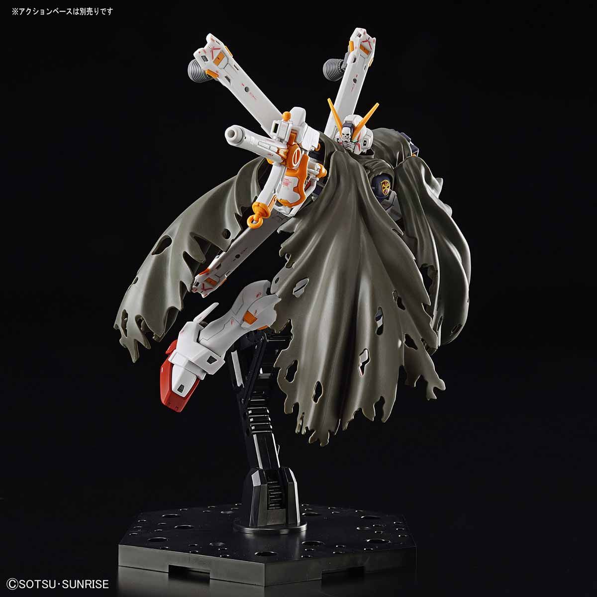
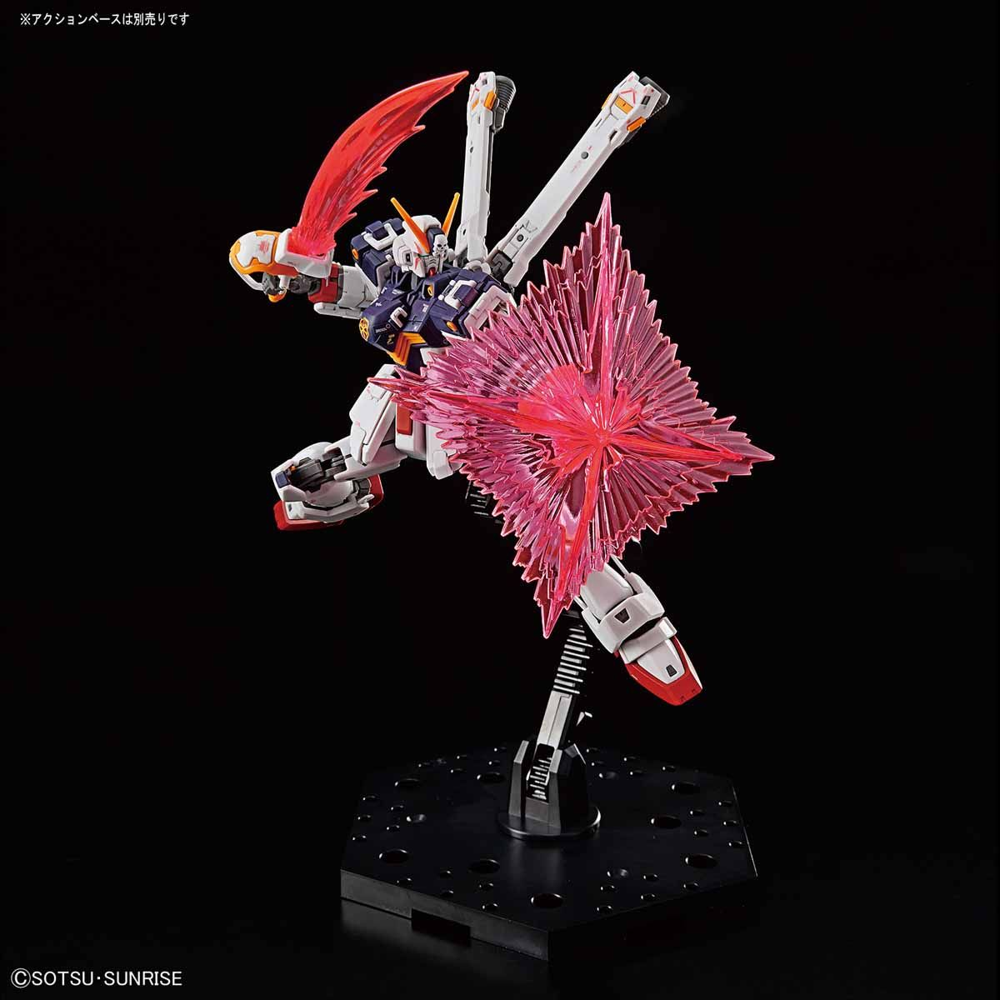
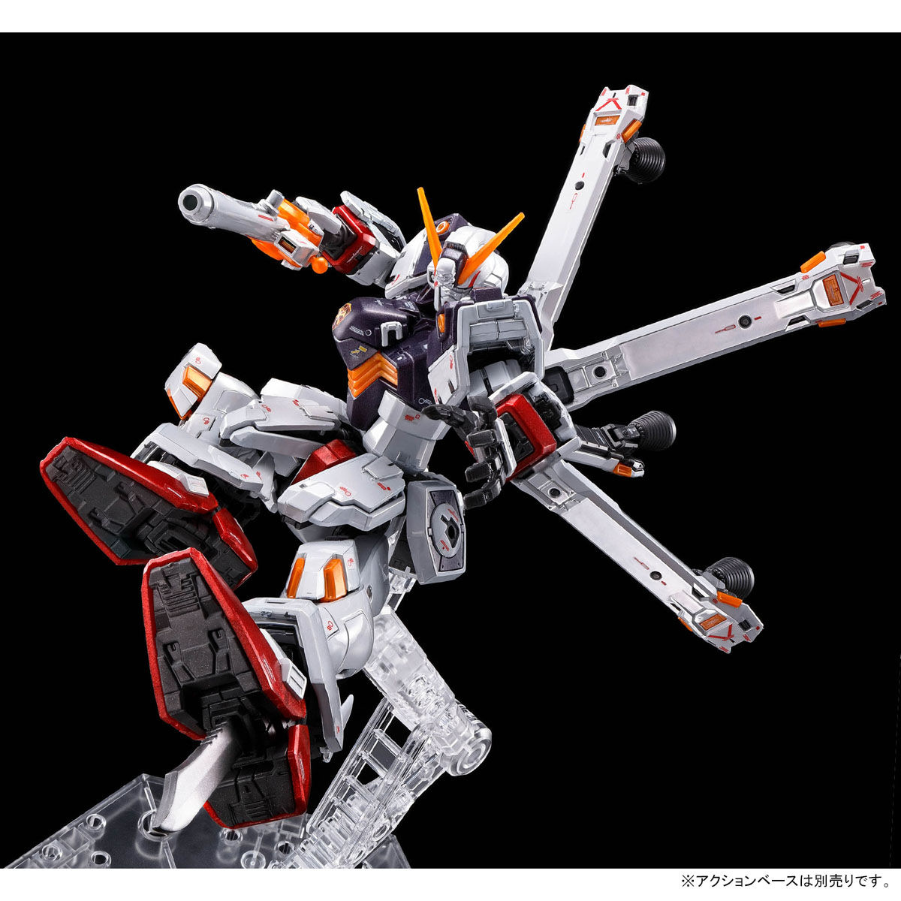
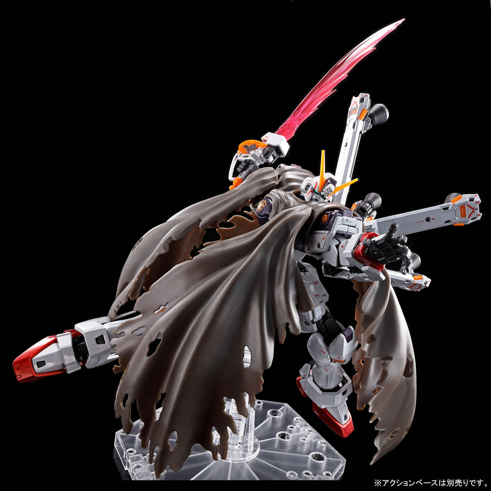

- Sơ lược
- Trang bị
- Vulcan Gun
- Beam Saber
- Heat Dagger
- Scissor Anchor
- Beam Shield / Brand Marker
- Buster Gun
- Beam Zanber
- Zanbuster
- Rifle Grenade
- Atomic Shell
- Anti-Beam Coating Cloak
- Dummy Launcher
- Bio-Computer
- Heat Radiation Face Open
- Cốt truyện
XM-X1 Crossbone Granada X-1 là Mobile Suit thử nghiệm được phát triển bởi Viện Nghiên cứu Hải quân Chiến lược của Liên bang Trái đất (SNRI). Được xuất hiện trong bộ truyện tranh cùng tên , Mobile Suit Crossbone Gundam .
F97 được SNRI thiết kế đặc biệt để sử dụng gần Sao Mộc, nơi trường hấp dẫn mạnh tạo ra các vấn đề nghiêm trọng về lực đẩy. Các đơn vị hoạt động trên Trái đất và gần quỹ đạo Trái đất thường đạt được tính cơ động cao bằng cách sử dụng bộ đẩy được phân bổ trên cơ thể của Mobile Suit. Tuy nhiên, dưới tác động của lực hấp dẫn của Sao Mộc, đòi hỏi phải mở rộng bộ đẩy, dẫn đến tăng kích thước và khối lượng của MS. Bộ đẩy lớn hơn sẽ yêu cầu lò phản ứng mạnh hơn, từ đó tăng thêm khối lượng.
Để giải quyết vấn đề này, F97 được trang bị bộ bốn động cơ đẩy có thể di chuyển thành mảng hình chữ X. Được sử dụng song song với hệ thống AMBAC của đơn vị, những bộ đẩy này cho phép khả năng di chuyển cao quanh quỹ đạo Sao Mộc mà không làm tăng kích thước và khối lượng của mobile suit và khi gập 4 động cơ lại sẽ thành một cột đẩy khổng lồ, chúng có khả năng tăng đáng kể tốc độ tối đa của đơn vị. Vì là một thiết bị được thiết kế cho những điều kiện đặc biệt như F97, sẽ rất khó điều khiển trên hoặc gần Trái đất.
Mặc dù về mặt kỹ thuật, F97 là những MS đa dụng, nhưng chúng được thiết kế chú trọng hơn vào khả năng chiến đấu tầm gần. Với khả năng cơ động cao, chúng dễ dàng vượt qua hầu hết các Mobile Suit của đối phương, cho phép chúng tiến vào cự ly gần và vượt qua Beam Shield. Ngoài ra, thủ lĩnh của Đội tiên phong Crossbone, Berah Ronah, đã tìm cách chiến đấu chống lại Đế chế Sao Mộc với ít thiệt hại về nhân mạng nhất có thể. Với các lưỡi dao, việc hạ gục Mobile Suit mà không phá hủy buồng lái sẽ dễ dàng hơn so với súng trường.
Một trang bị đáng chú ý khác là áo choàng Anti-Beam Coating, có thể cất ở mặt sau của F97 và mở ra khi cần. Khi mở ra, nó bao phủ toàn bộ cơ thể của Mobile Suit và phân tán năng lượng của tia beam lên áo choàng. Nó thường có thể chịu được 5 lần bắn Beam tiêu chuẩn mà không tốn bất kỳ năng lượng nào và có thêm khả năng tàng hình. Giống như người tiền nhiệm Gundam F91, "miệng" của nó có thể mở ra như một lỗ thông hơi. F97 cũng được trang bị Core Fighter loại Plug-in, mang các bộ đẩy có thể di chuyển và hai súng bắn Beam ở dạng Core Fighter.
Tổng cộng có bốn chiếc đã được SNRI sản xuất và trao cho Crossbone Vanguard. Để che giấu giao dịch bí mật này, họ được gán các mã X-0, XM-X1, XM-X2 và XM-X3 và đặt tên là Crossbone Gundam.
Những vũ khí bắn đạn pháo gắn trên đầu này có tốc độ bắn cao nhưng sức mạnh thấp và không hiệu quả trước các MS. Nhưng chúng có thể làm hỏng các khu vực được bọc thép nhẹ như cảm biến và rất lý tưởng để bắn hạ các mục tiêu nhỏ, bọc thép nhẹ như tên lửa hoặc xe nhỏ.
Beam Saber là vũ khí cận chiến tiêu chuẩn của nhiều MS. Nó phát ra một lưỡi kiếm plasma chứa I-field có thể cắt xuyên qua bất kỳ bộ giáp vật lý nào không có khả năng kháng Beam. Crossbone Gundam được trang bị hai thanh ở trên vai. Chúng cũng đóng vai trò là súng bắn tia beam cho máy bay chiến đấu cốt lõi Core Fighter.
Crossbone Bones cũng được trang bị hai con dao găm nhiệt làm vũ khí cận chiến. Không giống như hầu hết các loại vũ khí nhiệt, lưỡi dao găm nhiệt được làm nóng bằng cách sử dụng nhiệt còn sót lại từ bộ đẩy của chân. Lưỡi kiếm nóng có thể làm tan chảy áo giáp của kẻ thù khi tiếp xúc. Những con dao găm nhiệt được cất giữ ở 2 bên bắp chân. Có thể được cầm tay khi sử dụng, nhưng cũng có thể trượt ra khỏi bàn chân như một đòn tấn công bất ngờ.
Được trang bị một cặp mỏ neo dạng kéo được gắn ở váy trước, kết nối bằng dây xích. Mặc dù không phải là vũ khí nhưng chúng có một số công dụng trong chiến đấu. Chúng có thể được sử dụng để kẹp chặt kẻ thù để cố định hoặc kéo nó lại gần Crossbone Bone để đánh cận chiến và nhiều công dụng khác.
Không giống I-field Generator , chỉ có hiệu quả chống lại các vũ khí beam, Beam Shield của Crossbone chặn cả Beam và đạn thường. Có thể tạo ra 1 dạng beam hình khiên, có thể bật tắt khi cần thiết để tiết kiệm năng lượng và có thể tự động vô hiệu khi có nguy cơ tiếp xúc với chính bản thân MS. Được trang bị trên cằng tay, có thể linh hoạt tạo thành vũ khí beam dạng kim tự tháp để đánh cận chiến và tạo thành một lỗ hình chữ X , nếu mục tiêu không bị phá hủy hoàn toàn.
là vũ khí tầm xa chính của Crossbone Gundam. Beam Pistol này được mô phỏng theo súng kíp và thường chỉ được sử dụng bằng một tay, để tay còn lại có thể tự do sử dụng vũ khí cận chiến. Được cất váy bên phải khi không sử dụng, có thể kết hợp với Beam Zanber để tạo thành Zanbuster.
Là một thanh kiếm beam có công suất cao và là vũ khí chính của Crossbone Gundam. Cán kiếm được mô phỏng theo chuôi kiếm của cướp biển và được lưu trữ ở váy bên trái khi không sử dụng. Sức mạnh của Beam Zanber cao hơn đáng kể so với các Beam Saber thông thường, đến mức Crossbone Gundam có thể dễ dàng áp đảo kẻ địch trong cận chiến hay thậm chí cắt xuyên qua chùm beam của một Beam Saber thông thường. Khi kết hợp với Buster Gun, Beam Zaber sẽ đảm nhiệm vai trò tay cầm.
Là một loại súng trường được hình thành từ sự kết hợp giữa Beam zanber và Buster Gun, chùm beam mà nó bắn ra mạnh hơn Buster Gun. Có thể gắng một quả lựu đạn vào nóng súng và sử dụng được một lần
Là lựu đạn được trang bị vào nòng của Zanbuster. Thường không được sử dụng để chống lại Mobile Suit, chỉ được sử dụng khi đánh chặn tên lửa hạt nhân nhắm vào Mother Vanguard.
Một loại vũ khí tương tự như Rifle Grenade
Giống như các MS Crossbone Vanguard khác được sử dụng trong UC 0133, X-1 có thể được trang bị một chiếc áo choàng bằng vải đã được xử lý bằng lớp phủ chống beam. Với kích thước của lớn, có thể bao phủ hoàn toàn Mobile Suit, ngoại trừ phần đầu, mang lại khả năng bảo vệ cực kì tốt. Mặc dù có ưu điểm là bảo toàn năng lượng nhưng chiếc áo choàng lại có hai nhược điểm. Đầu tiên, không giống như tấm khiên chắn beam, áo choàng chỉ có thể chịu được khoảng 5 phát bắn trước khi lớp phủ bị phá hủy, khiến chiếc áo choàng trở thành một tấm vải bình thường. Nhược điểm thứ hai là áo choàng không có tác dụng bảo vệ khỏi vũ khí vật lý.
Nhờ hạt Minovsky, chiến tranh trong Universal Century chủ yếu dựa vào cảm biến thị giác, có thể bị đánh lừa bởi các mồi dữ dạng bơm hơi có hình dạng của một MS, tiểu hành tinh và thậm chí cả tàu chiến. Các loại phức tạp hơn thì được trang bị động cơ nhỏ , cho phép di chuyển để gia tăng khả năng đánh lừa cảm biến hồng ngoại. Dummy Launcher được trang bị trên tay XM-X1, giúp Crossbone có thể tiếp cận nhờ phóng các hình nộm gây bối rối.
Là một loại giao diện Man-Machine mới, trước đây được cài đặt trong Gundam F91. Bio-Computer là thiết bị thế hệ tiếp theo được phát triển từ hệ thống Psycommu nhưng ít gây căng thẳng hơn cho Pilot. Ban đầu nó nhằm mục đích giúp đỡ người khuyết tật nhưng việc phát triển nó được tài trợ bởi Lực lượng Liên bang Trái đất, những người hy vọng sử dụng nó làm hệ thống điều khiển cho Mobile Suit. Đúng như tên gọi của nó, Bio-Computer có cấu trúc tương tự như bộ não con người và quá trình hoạt động của nó giống với suy nghĩ và cảm xúc của con người. Thay vì chỉ hiển thị dữ liệu được thu thập bởi các cảm biến của MS trên màn hình máy tính, Bio-Computer có thể chuyển dữ liệu trực tiếp đến phi công dưới dạng thông tin cảm giác, giúp Pilot có thể đồng bộ với Bio-Computer. Giống như hệ thống Psycommu sơ khai, Bio-Computer cũng cho phép phi công điều khiển MS chỉ bằng suy nghĩ. Tuy nhiên, toàn bộ tiềm năng tiềm ẩn của hệ thống này chỉ có thể được khai thác bởi phi công Newtype.
Giống các anh em của nó, X-1 có thể tạm thời mở rộng phần miệng để giải phóng nhiệt và tăng hiệu suất.
XM-X1 CrossboneGundam X-1 là Mobile Suit loại F97 đầu tiên được chế tạo và đưa vào sử dụng bởi Berah Ronah của Crossbone Vanguard. Đóng vai trò là Mobile Suit chủ lực của họ và do Kincade Nau điều khiển. Kincade chỉ huy nhiều cuộc chiến chống lại Đế chế Sao Mộc, sử dụng các kỹ năng được mài giũa của mình để biến Crossbone X-1 trở thành nỗi kinh hoàng trên chiến trường. Kỹ năng chiến đấu của anh tinh vi đến mức không đối thủ nào có thể buộc Kincade sử dụng khiên của Crossbone X-1.
Một trong những trận chiến nổi bật nhất mà Crossbone X-1 tham gia là Trận chiến Io, là cuộc xâm lược của Crossbone Vanguard vào căn cứ quân sự của Đế chế Sao Mộc trên mặt trăng Io, nơi Chủ tịch Sao Mộc Crux Dogatie cư trú. Căn cứ là một cái bẫy, với lò phản ứng hạt nhân được thiết lập để phát nổ khi Crossbone Vanguard tiến vào bên trong. Kincade đưa Crossbone X-1 vào sâu trong lòng đich, tiêu diệt các đơn vị EMS-09 Vagon phòng thủ, và thành công vô hiệu hóa lò phản ứng.
Trận chiến cuối cùng mà Crossbone X-1 tham gia trước khi được nâng cấp là chống lại đội Death Gale của Đế chế Sao Mộc. Về mặt hiệu suất, các EMS-VSX1 Quavarze không thể so sánh với Gundam nhưng đã phối hợp cực tốt với nhau khiến Crossbone X-1 bị hư hại nghiêm trọng và không thể sửa chữa được. Crossbone Vanguard đã sử dụng phần lớn tài nguyên còn lại của họ để sửa chữa và nâng cấp XM-X1 Crossbone Gundunda X-1 thành XM-X1 Crossbone Sword X-1 Kai, cung cấp cho nó vũ khí cận chiến tầm xa dạng roi được thiết kế để vượt qua bàn tay rắn của EMS-VSX1 Quavarze.
